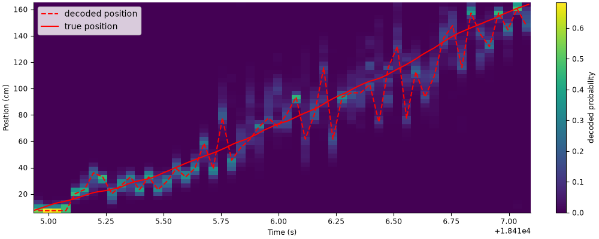
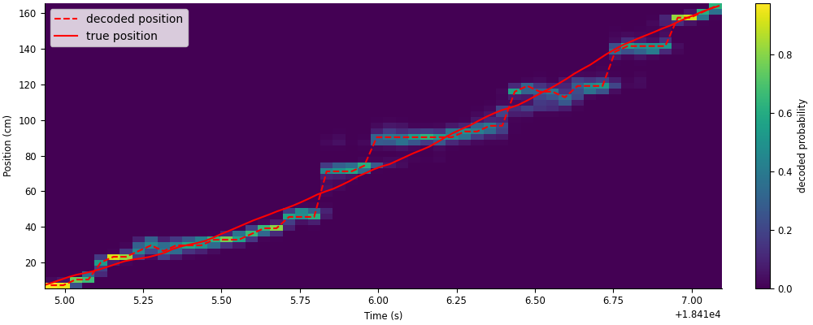
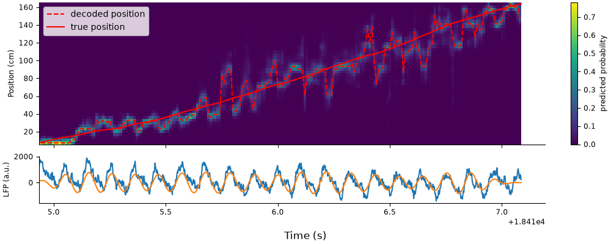

Download
This notebook can be downloaded as 02_04_place_cells_decoding-users.ipynb. See the button at the top right to download as markdown or pdf.
Neural decoding#
This notebook has had all its explanatory text removed and has not been run. It is intended to be downloaded and run locally (or on the provided binder), working through the questions with your small group.
In this series of notebooks, we will review more advanced applications of pynapple; tuning curves, signal processing, and decoding; as well as fitting GLMs to the data using NeMoS. We’ll apply these methods to demonstrate and visualize some well-known physiological properties of hippocampal activity, specifically phase presession of place cells and sequential coordination of place cell activity during theta oscillations.
This series is split into 4 notebooks:
Data wrangling, 1D neural tuning, and model fitting
Signal processing
2D neural tuning and model fitting
(This notebook) Neural decoding
This notebook assumes you have already gone through the first notebook to explore the data. We’ll reinitialize variables created in the first notebook that will be used here.
import workshop_utils
# imports
import math
import os
import matplotlib.pyplot as plt
import numpy as np
import pandas as pd
import requests
import scipy as sp
import seaborn as sns
import tqdm
import pynapple as nap
# necessary for animation
import nemos as nmo
plt.style.use(nmo.styles.plot_style)
# configure pynapple to ignore conversion warning
nap.nap_config.suppress_conversion_warnings = True
# code needed from first notebook
path = workshop_utils.fetch_data("Achilles_10252013_EEG.nwb")
data = nap.load_file(path)
forward_ep = data["forward_ep"]
position = data["position"].restrict(forward_ep)
lfp = data["eeg"][:,0].restrict(forward_ep)
spikes = data["units"]
ex_run_ep = nap.IntervalSet(start=forward_ep[9].start, end=forward_ep[9].end)
ex_position = position.restrict(ex_run_ep)
Part 5: Neural decoding#
Decoding position from spiking activity#
In this notebook we’ll do a popular analysis in the rat hippocampus sphere: Bayesian decoding. This analysis is an elegent application of Bayes’ rule in predicting the animal’s location (or other behavioral variables) given neural activity at some point in time. Refer to the dropdown box below for a more in-depth explanation.
Background: Bayesian decoding
Recall Bayes’ rule, written here in terms of our relevant variables:
Our goal is to compute the unknown posterior \(P(position|spikes)\) given known prior \(P(position)\) and known likelihood \(P(spikes|position)\).
\(P(position)\), also known as the occupancy, is the probability that the animal is occupying some position. This can be computed exactly by the proportion of the total time spent at each position, but in many cases it is sufficient to estimate the occupancy as a uniform distribution, i.e. it is equally likely for the animal to occupy any location.
The next term, \(P(spikes|position)\), which is the probability of seeing some sequence of spikes across all neurons at some position. Computing this relys on the following assumptions:
Neurons fire according to a Poisson process (i.e. their spiking activity follows a Poisson distribution)
Neurons fire independently from one another.
While neither of these assumptions are strictly true, they are generally reasonable for pyramidal cells in hippocampus and allow us to simplify our computation of \(P(spikes|position)\)
The first assumption gives us an equation for \(P(spikes|position)\) for a single neuron, which we’ll call \(P(spikes_i|position)\) to differentiate it from \(P(spikes|position) = P(spikes_1,spikes_2,...,spikes_N|position)\), or the total probability across all \(N\) neurons. The equation we get is that of the Poisson distribution:
where \(f_i(position)\) is the firing rate of the neuron at position \((position)\) (i.e. the tuning curve), \(\tau\) is the width of the time window over which we’re computing the probability, and \(n\) is the total number of times the neuron spiked in the time window of interest.
The second assumptions allows us to simply combine the probabilities of individual neurons. Recall the product rule for independent events: \(P(A,B) = P(A)P(B)\) if \(A\) and \(B\) are independent. Treating neurons as independent, then, gives us the following:
The final term, \(P(spikes)\), is inferred indirectly using the law of total probability:
Another way of putting it is \(P(spikes)\) is the normalization factor such that \(\sum_{position} P(position|spikes) = 1\), which is achived by dividing the numerator by its sum.
If this method looks daunting, we have some good news: pynapple has it implemented already in the function nap.decode_bayes. All we’ll need are the spikes, the tuning curves, and the width of the time window \(\tau\).
Aside: Cross-validation
Generally this method is cross-validated, which means you train the model on one set of data and test the model on a different, held-out data set. For Bayesian decoding, the “model” refers to the model likelihood, which is computed from the tuning curves.
If we want to decode an example run down the track, our training set should omit this run before computing the tuning curves. We can do this by using the IntervalSet method set_diff, to take out the example run epoch from all run epochs. Next, we’ll restrict our data to these training epochs and re-compute the place fields using nap.compute_tuning_curves. We’ll also apply a Gaussian smoothing filter to the place fields, which will smooth our decoding results down the line.
The code below will redefine the position tuning curves that we originally computed in the first notebook with two changes: 1) they leave out the period we will decode (see above), and 2) they’re computed over all units, which can help with decoder accuracy.
from scipy.ndimage import gaussian_filter1d
# hold out trial from place field computation
run_train = forward_ep.set_diff(ex_run_ep)
# get position of training set
position_train = position.restrict(run_train)
# compute place fields using training set
place_fields = nap.compute_tuning_curves(spikes, position_train, bins=50, feature_names=["position"])
# smooth place fields
place_fields.data = gaussian_filter1d(place_fields.data, 1, axis=-1)
# plot sorted, normalized tuning curves
idx = place_fields.argmax(axis=1)
place_fields_sorted = place_fields.sortby(idx)
place_fields_sorted["unit"] = np.arange(place_fields_sorted.shape[0])
p = (place_fields_sorted / place_fields_sorted.max(axis=1)).plot()
We can decode any number of features using the function nap.decode_bayes, which decodes any feature used in the input tuning_curves computed by nap.compute_tuning_curves.
1. Use nap.decode_bayes to decode position during ex_run_ep using all units in spikes.#
Use 40 ms time bins
Note:
ex_run_epwas originally computed in the first notebook and redefined above.
decoded_position, decoded_prob =
Let’s plot decoded position with the animal’s true position. We’ll overlay them on a heat map of the decoded probability to visualize the confidence of the decoder.
fig,ax = plt.subplots(figsize=(10, 4), constrained_layout=True)
c = ax.pcolormesh(decoded_position.index,place_fields.position,np.transpose(decoded_prob))
ax.plot(decoded_position, "--", color="red", label="decoded position")
ax.plot(ex_position, color="red", label="true position")
ax.legend()
fig.colorbar(c, label="decoded probability")
ax.set(xlabel="Time (s)", ylabel="Position (cm)", );
Figure check

While the decoder generally follows the animal’s true position, there is still a lot of error in the decoder, especially later in the run. We can improve the decoder error by smoothing the spike counts. nap.decode_bayes provides the option to do this for you by specifying sliding_window_size, which specifies the width, in number of bins, of a uniform (all ones) kernel to convolve with the spike counts. This is equivalent to applying a moving sum to adjacent bins, where the width of the kernel is the number of adjacent bins being added together. This can also be referred to as using a sliding window to count spikes that shifts in shorter increments than the window’s width, which combines the accuracy of using a wider time bin with the temporal resolution of a shorter time bin.
For example, let’s say we want a sliding window of \(200 ms\) that shifts by \(40 ms\). This is equivalent to summing together 5 adjacent \(40 ms\) bins, or convolving spike counts in \(40 ms\) bins with a length-5 array of ones (\([1, 1, 1, 1, 1]\)). Let’s visualize this convolution.
unit = 177
ex_counts = spikes[unit].restrict(ex_run_ep).count(0.04)
workshop_utils.animate_1d_convolution(ex_counts, np.ones(5), tsd_label="original counts", kernel_label="moving sum", conv_label="convolved counts")
The count at each time point is computed by convolving the kernel (yellow), centered at that time point, with the original spike counts (blue). For a length-5 kernel of ones, this amounts to summing the counts in the center bin with two bins before and two bins after (shaded green, top). The result is an array of counts smoothed out in time (green, bottom).
2. Decode the same run as above, now using sliding window size of 5 bins.#
smth_decoded_position, smth_decoded_prob =
Let’s plot the results.
fig,ax = plt.subplots(figsize=(10, 4), constrained_layout=True)
c = ax.pcolormesh(smth_decoded_position.index,place_fields.position,np.transpose(smth_decoded_prob))
ax.plot(smth_decoded_position, "--", color="red", label="decoded position")
ax.plot(ex_position, color="red", label="true position")
ax.legend()
fig.colorbar(c, label="decoded probability")
ax.set(xlabel="Time (s)", ylabel="Position (cm)", );
Figure check

This gives us a much closer approximation of the animal’s true position.
Units phase precessing together creates fast, spatial sequences around the animal’s true position (see notebook 2 for a deeper dive into phase precession). We can demonstrate this by decoding at an even shorter time scale, which will appear as smooth errors in the decoder.
3. Decode again using a smaller bin size of \(10 ms\) and sliding window size of 5 bins.#
smth_decoded_position, smth_decoded_prob =
We’ll make the same plot as before to visualize the results, but plot it alongside the raw and filtered LFP.
fig, axs = plt.subplots(2, 1, figsize=(10, 4), constrained_layout=True, height_ratios=[3,1], sharex=True)
c = axs[0].pcolormesh(smth_decoded_prob.index, smth_decoded_prob.columns, np.transpose(smth_decoded_prob))
p1 = axs[0].plot(smth_decoded_position, "--", color="r")
p2 = axs[0].plot(ex_position, color="r")
axs[0].set_ylabel("Position (cm)")
axs[0].legend([p1[0],p2[0]],["decoded position","true position"])
fig.colorbar(c, label = "predicted probability")
sample_rate = 1250
theta_band = nap.apply_bandpass_filter(lfp, (6.0, 12.0), fs=sample_rate)
axs[1].plot(lfp.restrict(ex_run_ep))
axs[1].plot(theta_band.restrict(ex_run_ep))
axs[1].set_ylabel("LFP (a.u.)")
fig.supxlabel("Time (s)");
Figure check

The estimated position oscillates with cycles of theta, where each “sweep” is referred to as a “theta sequence”. Fully understanding the properties of theta sequences and their role in learning, memory, and planning is an active topic of research in Neuroscience!
Bonus Exercise 1#
Pynapple has another decoding method, nap.decode_template, that is agnostic to the underlying noise model of the data. In other words, where the above implementation of Bayesian decoding is specific to spiking data (Poisson distributed data), template decoding can be applied to any data modality. As a bonus exercise, you can try decoding position using this method and compare the results to the Bayesian decoder used above!
# enter code here
Bonus Exercise 2#
Instead of using place fields computed from the data, what if we used the predicted tuning curves by our GLM in Part 2 to do decoding? As a second bonus exercise, you can try Bayesian decoding using GLM-predicted tuning curves and compare the results to the decoding above.
# enter code here